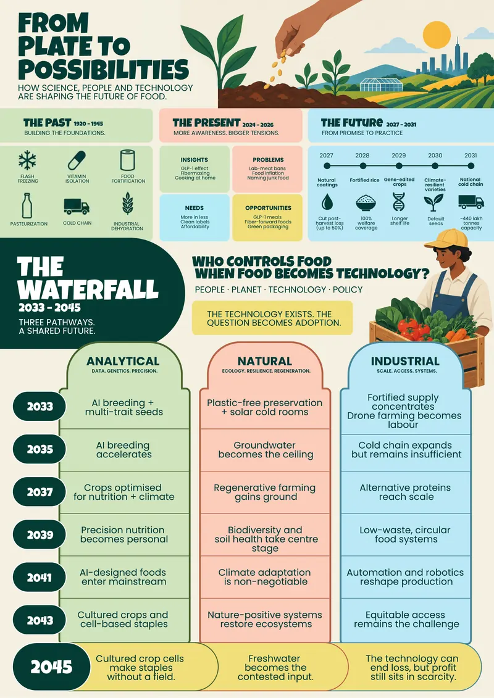
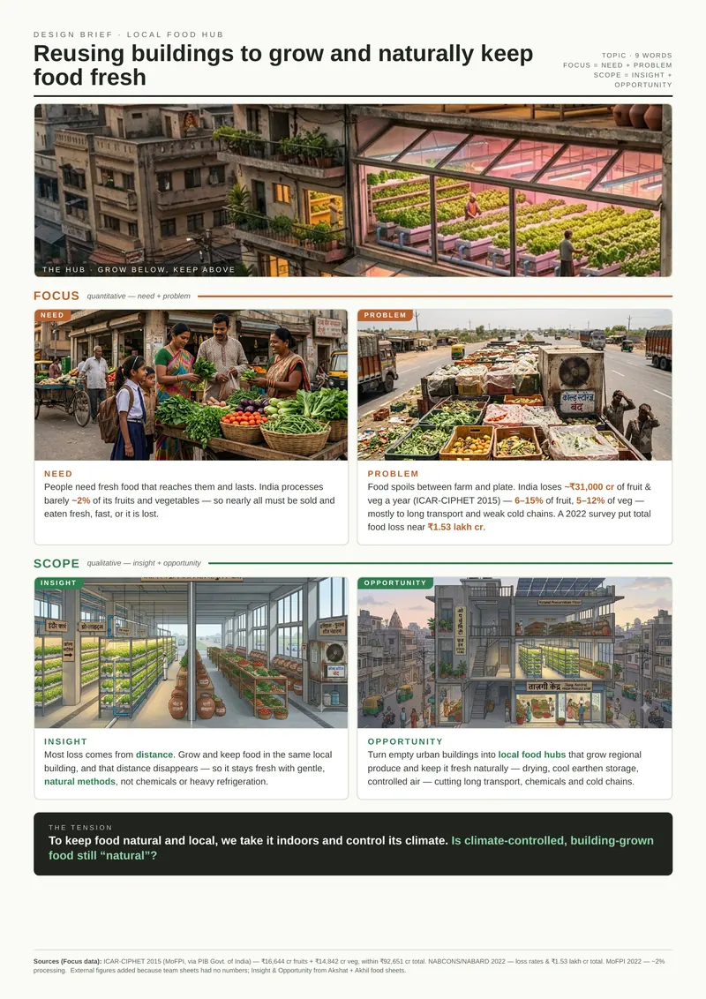

By 2039 freshness is fully software-run (coatings, cold chains, loss forecasts), but the controls sit with the platforms and seed owners. Farmers and buyers can't see, trust or contest how long food really lasts.
Speculative design, team project, 2026
Grow below, keep above.
What if empty city buildings grew our food and kept it fresh, right where we live? "The Hub" is our speculative answer. Then we pushed it to 2043 and asked who holds the timer on that freshness.
- Team
- Akhil Mistry, Akshat Jerath, Sayee Patil
- Studio
- Critical Design
- Methods
- Futures timeline, waterfall, SWOT, scenario, 300 ideas
- Format
- Timeline poster, design brief, scenario
- Status
- Speculative. Ongoing
- How we worked
- Group project. We built every stage together: each of us pitched ideas for the timeline, then we polished and filtered them as a group. From the cards, each of us wrote 100 ideas, 300 in all, and we clustered them together.
The problem
The problem
₹31,000 crof fruit and vegetables lost in India every year. Most of that loss comes from distance.
Source: ICAR-CIPHET, 2015Process
How the brief narrowed.
The course narrows on purpose. Every step below took the one before it and kept only what we could defend.
- 3topics
Food, travel and Formula 1. Desk research and a timeline for each.
- 1design brief
Food won: reuse buildings to grow and naturally keep food fresh.
- 3sequences
Three paths through the food waterfall, each one a scenario poster.
- 3SWOTs
One per scenario, to see where our strengths could actually act.
- 1redesign brief
Block corporate control of the freshness clock by 2039.
- 1world
The scenario we built out: the era of adaptive freshness.
- 9inspiration cards
Three each, picked from the deck our class made.
- 300ideas
100 each, remixing the cards against the brief.
- 10clusters
Mega, sequential and non-sequential. Business model canvases come next.
Research
A futures timeline, 1920 to 2043.
One line from the past to our scenario. The clock shows who decides how long food lasts in each era. The axis isn't to scale: each era gets the room its story needs.
-
The past
1920 – 1945Science learns to buy food time with physics: freeze it, heat it, dry it, add what's missing. Anyone with the machine can use the method.
- 1924 – 1941FortificationIodised salt, vitamin-D milk, enriched flour.
- 1928 – 1932Vitamin isolationVitamin C isolated, so you know what to add.
- 1930Flash freezingBirdseye's quick-freeze keeps the texture.
- 1930sPasteurisationHigh heat, short time, safe milk.
- 1930sCold chainMechanical refrigeration and refrigerated transport.
- 1940sDehydrationPowdered milk and egg ship light to the front.
-
The present
2024 – 2026India grows enough but loses it on the road. Here distance is the timer: every kilometre between farm and plate eats shelf-life.
Our briefReusing buildings to grow and naturally keep food fresh
InsightMost loss comes from distance. Grow and keep food in the same local building and the distance disappears.
OpportunityEmpty city buildings become food hubs that grow regional produce and keep it fresh with drying, cool earthen storage and controlled air.
-
Near future
2027 – 2031Fifteen things already in motion land in these five years. Freshness stops being only about cold. The lab starts writing it into the seed and the coating.
2027- Vertical farms go bust14 firms by 2025; Plenty raised ~$1B
- Edible coatings leave the labaimed at losses of up to 50%
- Solar cold rooms reach the farm gateoff-grid, no batteries
2028- Fortified rice on every welfare plate₹17,082 cr, funded to Dec 2028
- CRISPR tomato stays sellable longer28 to 36 days
- Drone spraying meets reality500 of 15,000 drones in year one
2029- Gene-edited rice reaches fieldsKamala: +19% yield
- The 2022 gene-edit rule pays off40+ crops in the pipeline
- Millets boom on the shelf, not the farmbajra still ~₹1,700 a quintal
2030- Biofortified staples scale1.5 to 3× the nutrients
- Climate-resilient seed becomes the default94% of 2024's new varieties
- The gene-edit trust verdictGM-Free India vs ICAR
2031- Cold storage hits ~440 lakh tonnes~33,000 reefer trucks, ~62,000 needed
- Released doesn't mean grown or eatenthe adoption gap stays open
- Does the loss number fall?wheat loss 5.96% → 4.17% so far
SignalTension: where the progress story breaks
-
The selected sequence
2033 – 2043Five points picked from our waterfall, each adding to the world before it. Freshness turns into a number someone else can read and set.
- 2033AnalyticalEdible coatings become a labelled shelf-life standard, crop by crop.
- 2035IndustrialCold-chain build-out becomes a political flagship, still short of need.
- 2037NaturalWarming shortens natural shelf-life faster than coatings extend it.
- 2039Analytical · our year of interventionA digital twin of the cold chain forecasts loss before it happens.
- 2043AnalyticalRoom-temperature preservation ends the need for constant cold.
- 2033
Redesign brief, after the SWOT
Blocking corporate control of India's food-freshness clock by 2039.
We ran a SWOT on all three scenarios and picked the one where our skills could push back: AI, systems and reverse engineering.
An open, farmer-readable freshness system: the standard, the cold-chain data and the expiry forecasts held in public hands, not a corporate black box.
When freshness becomes a number on a screen, whoever writes the expiry clock owns the value. The real fight is over who holds the clock.
An open-source freshness standard plus a reverse-engineered, farmer-readable expiry and forecast layer that keeps shelf-life data public and checkable.
Scenario, 2043
The era of adaptive freshness.
An algorithmic food system where AI breeding and digital-twin sensors manage produce down to the cell. Every harvest carries a software expiry clock that sets its market value in real time.
Who set the timerThe farmer
Who sets it in 2043The seed company
"We can't control the time limit of the expiry clock. It will be controlled by the companies making the seeds."From our SWOT, weakness
Ideation
From nine cards to 300 ideas.
Each of us picked three inspiration cards from the deck our class made, then remixed them against the redesign brief: 100 ideas each. We grouped the 300 into ten clusters. Business model canvases for the strongest come next.
9inspiration cards
300ideas, 100 each
10clusters
What we handed in
The poster and the brief.
The A1 timeline poster from week 7, and the design brief that came before the scenario. Open either one to read it full size.


Open questions
Open questions
Is food grown in a climate-controlled building still "natural"?
Who controls food when food becomes technology?